|
|
ท่องเที่ยวเชิงวัฒนธรรมวัดอรุณราชวราราม ราชวรมหาวิหาร(วัดแจ้ง)Wat Arun Ratchawararam Ratchaworamahawihan(Temple Of Dawn) |
|

|
เกี่ยวกับวัดอรุณราชวรารามราชวรมหาวิหาร |
| วัดอรุณราชวราราม (Temple of the Dawn, Bangkok) หรือที่ชาวบ้านนิยมเรียกกันติดปากว่า วัดแจ้ง (Temple in Bangkok) เป็น พระอารามหลวงชั้นเอกพิเศษ เป็นวัดโบราณที่มีมาตั้งแต่ ครั้งสมัยกรุงศรีอยุธยา เดิมทีเรียกว่า วัดมะกอก ต่อมาในสมัยพระเจ้ากรุงธนบุรี ชาวบ้านเรียกจน ติดปากว่า วัดแจ้ง เมื่อพระเจ้ากรุง ธนบุรีย้ายราชธานีจากกรุงศรีอยุธยามาตั้ง ณ กรุงธนบุรี ได้โปรดเกล้าฯ ให้วัดแจ้งเป็นวัดในเขตพระราชฐาน และใช้เป็นที่ประดิษฐานพระแก้วมรกตที่ได้ อัญเชิญมาจากเวียงจันทน์ ต่อมาในสมัยรัตนโกสินทร์ พระบาทสมเด็จพระพุทธยอดฟ้าจุฬาโลก มหาราช สมเด็จพระเจ้าลูกยาเธอ เจ้าฟ้ากรมหลวงอิศรสุนทร ได้เสด็จมา |
| ข้อมูลเกี่ยวกับนักท่องเที่ยว | |
| ตั้งอยู่ริมถนนสนามไชยและถนนมหาราช ติดกับพระบรมมหาราชวัง เปิดให้เข้าชมทุกวันระหว่างเวลา ๐๘.๐๐ - ๑๘.๓๐ น. ชาวต่างชาติจะต้องซื้อบัตรเข้าชมคนละ ๒๐๐ บาท สำหรับนักท่องเที่ยวต้องแต่งกายสุภาพ สุภาพสตรีห้ามสวมกางเกงขาสั้นเหนือเข่าเข้าเยี่ยมชม |
| 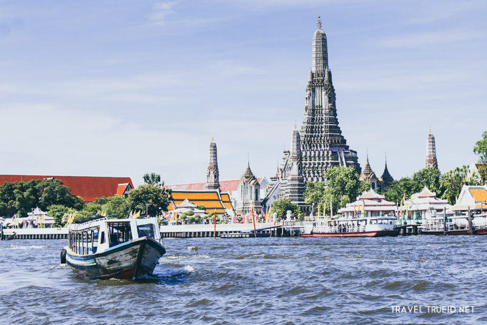 | การเดินทางมาวัดอรุณราชวรารามราชวรมหาวิหาร |
|
การเดินทาง 3 ทาง
1.ทางเรือ สามารถนั่งเรือด่วนเจ้าพระยามาลงที่ท่าวัดอรุณฯ ได้เลย 2.ทางรถ จากถนนปิ่นเกล้า เลี้ยวเข้าถนนอรุณอมรินทร์ ผ่านหน้าโรงพยาบาลศิริราช วัดระฆังโฆสิตารามวรมหาวิหาร เลยมาถึงจะเห็นทางเข้าวัดอรุณฯ อยู่ถัดจากทางเข้าหอประชุมกองทัพเรือ 3.เดินทางโดยแท็กซี่จากโรงแรมไอบิส สไตล์ กรุงเทพ ข้าวสาร เวียงใต้ ไปยังท่าเตียนใช้เวลาโดยประมาณ 15 นาที แล้วสามารถนั่งเรือข้ามฟาก (ค่าบริการ 4 บาท) ต่อไปยังวัดอรุณฯ |
| 12 จุดน่าสนใจที่วัดอรุณฯ | |
|
1.พระวิหารน้อย (ฝั่งซ้าย)
สิ่งที่สำคัญของของในพระวิหารน้อยก็คือเจดีย์จุฬามณีที่ทำมาเพื่อสื่อถือสวรรค์ชั้นดาวดึงส์ที่ถูกสร้างมาตั้งแต่สมัยรัชกาลที่ 4 และยังมีพระแก้วมรกตองค์จำลองซึ่งมีการสันนิษฐานว่า พระแก้วมรกตองค์จริงที่อยู่ในพระบรมมหาราชวังนั้น เคยถูกอัญเชิญมาและพักที่นี่ก่อนที่จะอัญเชิญไปที่วัดพระแก้วนั้นเอง |
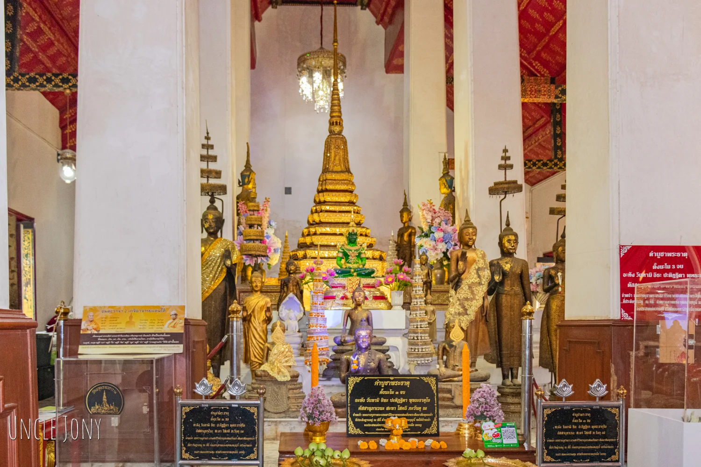 |
| 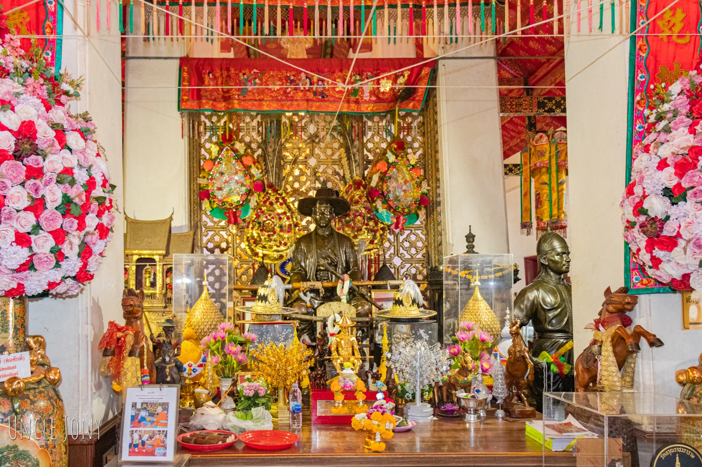 |
2.โบสถ์น้อย(ฝั่งขวา)
รูปปั้นของสมเด็จพระเจ้าตากสินมหาราช ไว้ให้ได้สักการะบูชากันอีกด้วย แต่ไม่ใช่แค่นั้นเมื่อเราเดินเข้าไปที่อยู่ข้างหลังจุดรูปปั้นสมเด็จพระเจ้าตากสินมหาราชนั้น เราจะเจอพระประธานที่อยู่กับโบสถ์น้อยมาตั้งแต่อยุธยา ก็คือ หลวงพ่อรุ่งอรุณ นั้นเอง |
|
3.พระบรมราชานุสาวรีย์พระบาทสมเด็จพระพุทธเลิศหล้านภาลัย
เป็นจุดสำคัญอีกจุดนึง ที่ใครๆมาก็ต้องมาสักการะ เพราะท่านทรงเป็นคนสำคัญที่ทำให้เกิดการบูรณะวัดอรุณฯนั่นเอง อยู่ติดทางริมน้ำขึ้นท่าเรือมา ก็จะเห็นพระบรมราชานุสาวรีย์ได้โดยง่าย ใครมาแล้วก็แวะสักการะสักนิดนะครับ เพื่อความเป็นสิริมงคล |
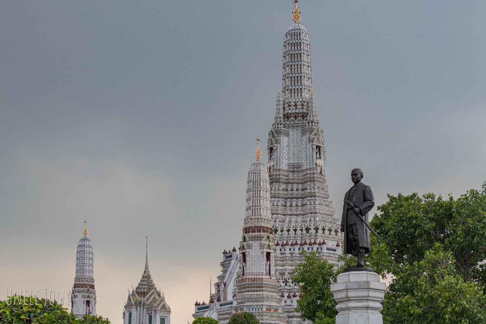 |
| 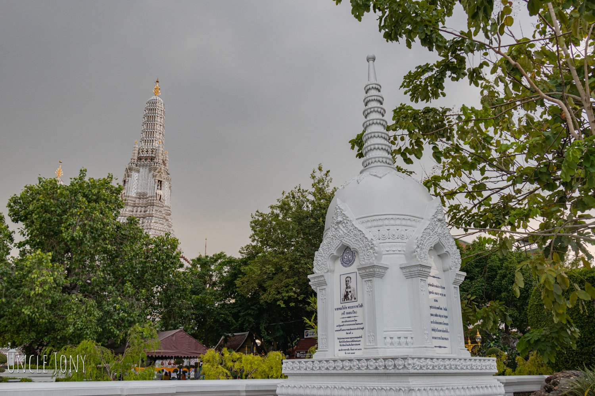 |
4.อนุสาวรีย์บรรจุอัฐิ นายพลเรือโท พระยาราชวังสัน (ศรี กมลนาวิน)
พลเรือโท พระยาราชวังสัน (ศรี กมลนาวิน) เป็นคนสำคัญของกองทัพเรือ เป็นศิษย์เอกของกรมหลวงชุมพรเขตอุดมศักดิ์ เป็นผู้อำนวยการโรงเรียนนายเรือคนแรกและก็เป็นคนที่ล่องเรือผ่านน่านมหาสมุทรได้ เพราะเป็นคนที่ไปบัญชาการนำเรือหลวงคำรณสินธุ์ (ลำแรก) กลับมาจากอู่ต่อเรือที่โกเบ ประเทศญี่ปุ่น ซึ่งที่ประเทศไทยได้สั่งต่อเรือไว้นั้นเองและยังเป็นองคมนตรีในรัชกาลที่ 7 อีกด้วย พอท่านเสียชีวิตลงอัฐิบางส่วนท่านก็ถูกมาไว้ที่นี่ |
|
5.ท่าเรือเฉพาะ
ท่าน้ำที่มีเสาสีแดงแบบนี้เป็นท่าเรือเฉพาะพระราชวงศ์หรือพระมหากษัตริย์เท่านั้น จะสามารถเดินตรงเข้าสู่พระอุโบสถวัดอรุณได้เลย เป็นท่าเรือที่ไม่เปิดให้ประชาชนใช้ |
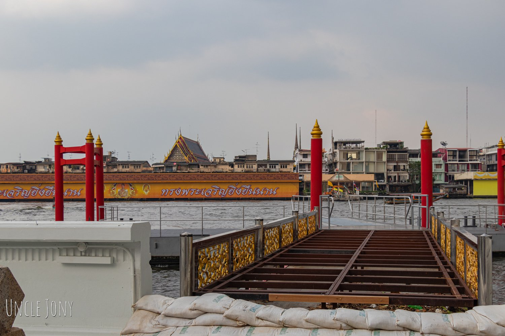 |

|
6.ซุ้มประตูทางเข้าพระอุโบสถ
ซุ้มประตูทางเข้าพระอุโบสถนั้นเป็นจุด Landmark ที่นักท่องเที่ยวหลายคนสนใจมากๆ ไม่ว่าจะมาตอนใหน คุณก็จะสามารถเห็นนักท่องเที่ยวมายืนถ่ายรูปเสมอๆนั่นเอง ยักษ์ฝั่งซ้ายสีเขียวๆนั้นคือ ทศกัณฐ์ ด้านขวาขาวๆคือ สหัสเดชะ จริงๆแล้วยักษ์ที่เฝ้าประตูเนี่ยเขาเชื่อว่าเป็นนายทวารบาลไว้ขับไล่สิ่งชั่วร้ายไม่ให้เข้ามายุ่งวุ่นวายในวัดนั่นละ คุณเลยมักจะเห็นหลายๆวัดในประเทศไทยจะมียักษ์เฝ้าประตูอยู่หลายวัดเลย |
|
7.นายเรืองและนายนก
ทั้งสองคนคือคนที่เผาตัวเองเพื่อต้องการจะไปนิพพานซึ่งเหตุการณ์น่าจะเกิดขึ้นในช่วงรัชกาลที่ 2 ซึ่งเขาทำรูปปั้นมาไว้เพื่อสอนคนผมว่าอาจจะเป็นกุศโลบายไม่ให้คนเผาตัวเองกันอีกอีกด้วยมากกว่า |
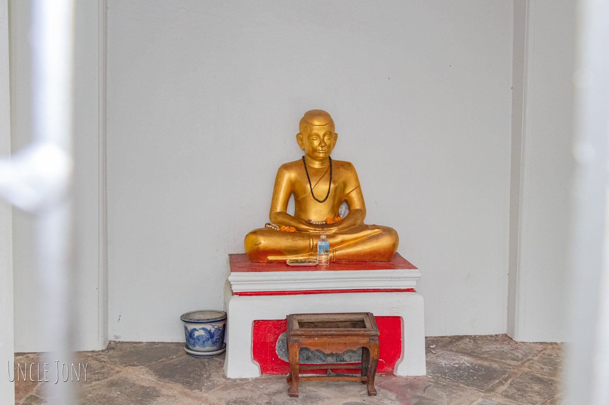 |
| 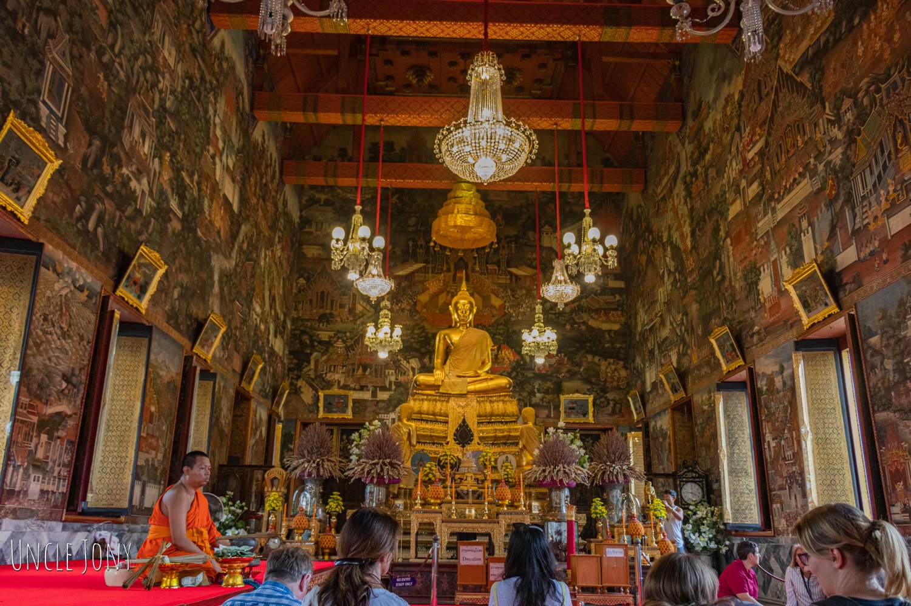 |
8.พระอุโบสถวัดอรุณฯ
ในพระอุโบสถวัดอรุณฯนั้น ข้างในประดิษฐานพระพุทธธรรมมิศราชโลกธาตุดิลก ตามประวัติเขาบอกว่าพระพุทธธรรมมิศราชโลกธาตุดิลกนั้นพระพักตร์นั้นคล้ายรัชกาลที่ 2 แล้วก็ตรงส่วนฐานนั้นยังบรรจุพระบรมราชสรีรางคารของรัชกาลที่ 2 ไว้อีกด้วย |
|
9.มณฑปพระพุทธบาทจำลอง
รอบพระพุทธบาทจำลองนี้ ว่ากันว่าถูกจำลองมาจากรอยพระพุทธบาทจำลองที่สระบุรี เท่าที่ผมได้อ่านตรงขอบๆนั้น กล่าวว่าสร้างเมื่อปี พ.ศ. 2364 น่าจะอยู่ในช่วงราวๆรัชกาลที่ 3 ในรอบๆพระพุทธบาทจำลองนั้นเท่าที่สังเกตุคือเป็นรูปมงคล 108 |
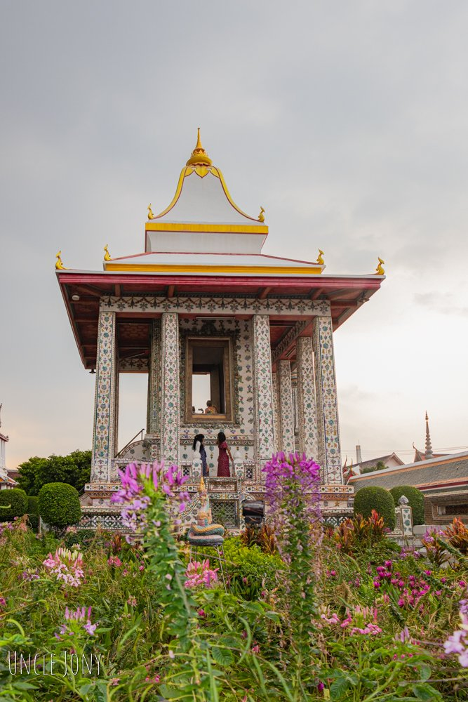 |
| 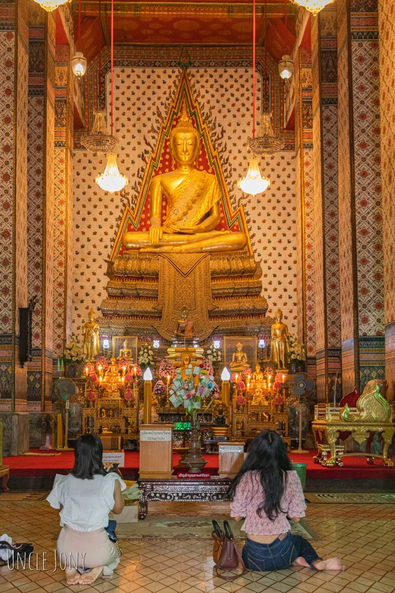 |
10.พระวิหารของวัดอรุณราชวราราม
ข้างในประดิษฐาน พระประทานนั้นคือ พระพุทธชัมพูนุทมหาบุรุษลักขณา อสีตยานุบพิตร เป็นรูปแบบของปางมารวิชัย |
|
11.พระปรางวัดอรุณฯ
ตรงกลางที่ใหญ่สุดของวัดอรุณฯ ผมเข้าใจว่าถูกสร้างจำลองมาจากเขาพระสุเมรุ จะเป็นปรางค์ประธานของที่นี่ ส่วนรอบๆเขาจะเรียกปรางค์บริวารน่าจะถูกสร้างจำลองมาจากเขาสัตบริภัณฑ์หรือเขาที่อยู่ในป่าหิมพานต์นั้นละเลยทำให้จะเห็นมีรูปแกะสลักกินนรกับกินรีอยู่ตรงส่วนฐานของพระปรางค์ |
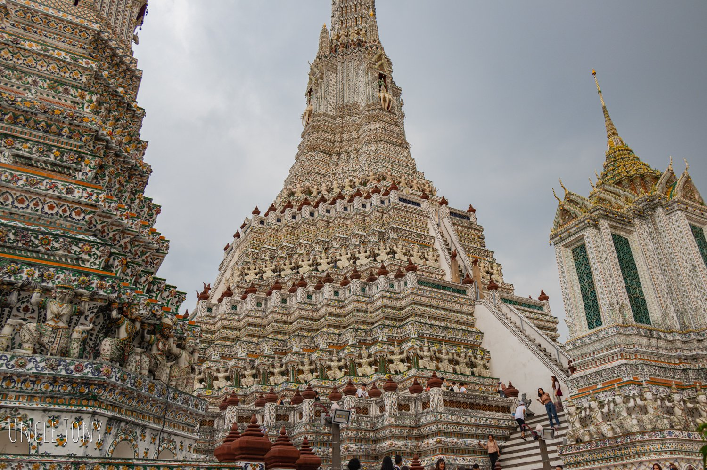 |
| 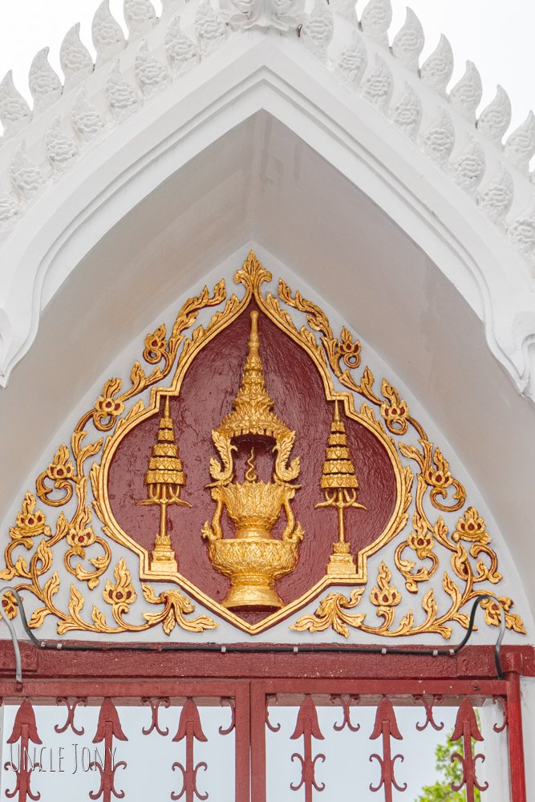 |
12.พระราชลัญจกรประจำรัชกาลหรือตราประจำรัชกาลต่างๆที่ซุ้มประตู
ที่วัดอรุณนี้มีซุ้มประตู ที่มีตราประจำรัชกาลต่างๆหรือพระราชลัญจกรประจำรัชกาล ให้เดินดูชมหรือศึกษากัน |
| 🙏ติดต่อ🙏 | |
|
วัดอรุณราชวราราม ราชวรมหาวิหาร
158 ถนน วังเดิม แขวง วัดอรุณ เขต บางกอกใหญ่ กรุงเทพมหานคร 10600 โทร (Tel) +66 02-891-2185 โทรสาร (Fax) +66 02-891-2185 Email - watarunoffice@gmail.com เวลาทำการ (Working time) เปิดทำการทุกวัน ตั้งแต่เวลา 8.00 น. ถึง 18.00 น. |
|
| ©2021-2022 Temple Of Dawn All right reserved |